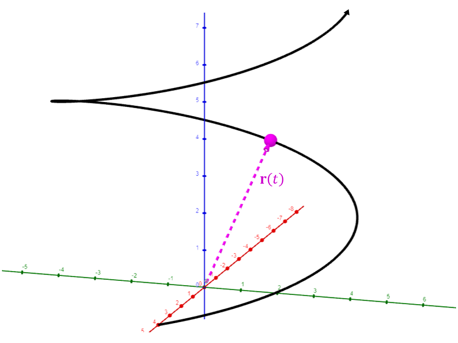

Lesson 13: Integrals of Vector-Valued Functions
Consider a continuous vector-valued function. Its integral is found by integrating each component separately.
Integral of a Vector-Valued Function
This can also be written in angle bracket notation.
An Example
Integrate the vector-valued function below.
Integrate each component. Each integral has its own constant of integration.
Here \(\mathbf{C} = C_1\mathbf{i} + C_2\mathbf{j} + C_3\mathbf{k}\) is a constant vector.
The definite integral of a continuous vector-valued function is also found by integrating each component separately.
Definite Integral of a Vector-Valued Function
An Example
Integrate the vector-valued function below from \(t = 0\) to \(t = 12\).

Since velocity is the derivative of position with respect to time, position is the antiderivative, or integral, of velocity with respect to time.
Since acceleration is the derivative of velocity with respect to time, velocity is the antiderivative, or integral, of acceleration with respect to time.
This can be expressed in the other vector notation we use.
A Sample Exam Problem
Suppose the acceleration of a particle as a function of time, in seconds, is described by the below vector function.
The particle's initial position and velocity are given below.
How many units of distance is the particle from the origin after five seconds?
Work one component at a time. First integrate the acceleration to find the velocity, using the initial velocity \(\vec{v}(0) = \langle 2, 1, 80 \rangle\) to find each constant.
Next integrate the velocity to find the position, using the initial position \(\vec{r}(0) = \langle 2, 10, 16 \rangle\) to find each constant.
Find the position after five seconds.
The distance from the origin is the magnitude of the position vector.
After five seconds, the particle is 25 units of distance from the origin.